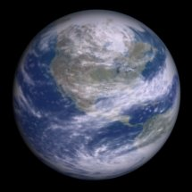

| Taro | |
|---|---|
 | |
| Affiliation | Chose-publique ultrème |
| Cycle annuel | 1.65 années standards |
| Cycle journalier | 28 heures standards |
| Soleils | 1 |
| Lunes | 3 |
| Espèces répertoriées | Humain 65%, autres 35% |
| Population | 10 milliards |
| Langue officielle | Ultrèmnaia Dervash |
| Sites remarquables | Tour Blanche |
| Surface émergée | 56% |

Planète d'origine du Rêveur. Planète recouvert en majorité de forets et d'océans; Taro est un Havre de paix. Les technologies ont été le plus confiné possible et les scientifiques de l'empire ont énormément travaillé sur l'esthétique et la qualité écologique des bâtiments et structures de Taro.
On trouvent deux populations distincte. La première est celle qui a décidé de garder son ancien statut; ils vivent en autarcie au milieu des forets de Taro. La seconde est constitué de ceux ayant décidé de profiter des avantages de la technologie; ils se retrouvent dans la ville Dieu, la ville Mat et la ville Arcane; trois immenses complexes de plusieurs milliards d'habitants à la pointe de la technologie et du niveau de vie. La première est la capitale politique, la seconde la capitale militaire et la troisième la capitale scientifique et religieuse. La population est totalement acquis à l'Ultremisme.
L'essentiel des milliers de bunkers AA constituant la défense de la planète se retrouvent sur ces trois villes. On trouve également une défense de bunker de type ATMO dont le nombre; très élevé, reste inconnu. Elle constitue la première ligne en cas de tentative d'invasion.
Ceux qui prêtent l'oreille pourront entendre parler d'une tour de marbre blanc s'élevant quelque part dans les forets de Taro; une tour aux étranges influences, impossible à situer géographiquement, premier temple du rêve et siège du pouvoir de l'empire. Mais cela n'est qu'une légende.